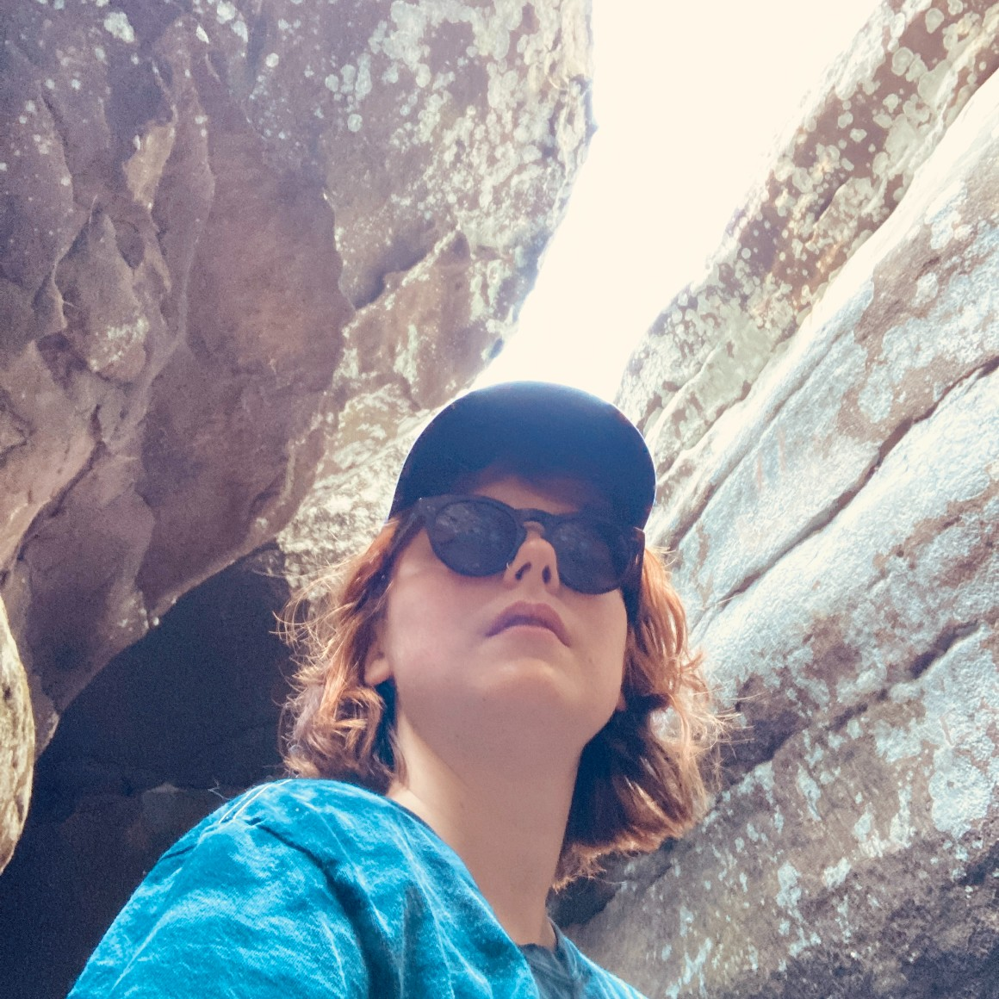

---
# Feel free to add content and custom Front Matter to this file.
# To modify the layout, see https://jekyllrb.com/docs/themes/#overriding-theme-defaults

layout: page
title: Sidney Lower
hero_image: nrao21ao18_Sreevani_FarawayH20_Illustration.jpg
subtitle: Software Developer/Scientific Programmer @ Guidehouse
---
<div class="columns is-mobile is-centered is-vcentered">
  <div class="column is-one-third">
    
  </div>
  <div class="column">
    <span class="subtitle">
    <br>
        Hi! I'm a software developer at Guidehouse working with the Statistical Modeling Division of the National Weather Service's Meteorological Development Lab. I am a recent astronomy PhD graduate from the University of Florida, where I studied galaxy formation & evolution with cosmological simulations, led by my advisor Desika Narayanan in collaboration with a long list of amazing scientists from institutions around the world.


    </span>
  </div>
</div>


